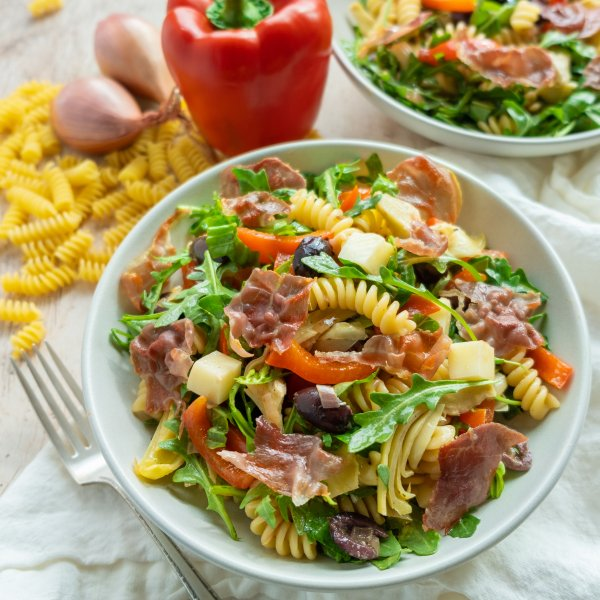

Antipasti Pasta Salad with Crispy Prosciutto, Artichokes & Mozzarella

Prep Time
35 min
Nutrition (per serving)
680.8 kcalCalories
25 gProtein
69.9 gCarbs
34 gFat
Full nutrition table
| Calories | 680.8 kcal |
| Total fat | 34 g |
| Saturated fat | 8.4 g |
| Trans fat | 0.2 g |
| Cholesterol | 39.8 mg |
| Sodium | 964.5 mg |
| Carbohydrates | 69.9 g |
| Fiber | 7.9 g |
| Sugars | 7.7 g |
| Protein | 25 g |
| Potassium | 681.6 mg |
| Calcium | 303.2 mg |
| Iron | 4.5 mg |
| Vitamin A | 290.5 IU |
| Vitamin C | 88.4 mg |
| Vitamin D | 6.1 IU |
Cookware
Ingredients
- 2 (6 oz) jarsartichoke hearts, marinated
- 1 (5 oz) pkgbaby arugula
- 1 small pkgfresh basil
- 2 clovesgarlic
- ½ cupKalamata olives, pitted
- ⅔ (8 oz) blockmozzarella cheese
- 4 slicesprosciutto
- 2red bell peppers
- 10 ozrotini pasta
- 2shallots
- black pepper
- Dijon mustard
- extra virgin olive oil
- Italian seasoning
- onion powder
- red wine vinegar
- salt
Steps
- Fill a large pot halfway with water, cover, and bring to a boil. Uncover, add salt and pasta, and stir for a few seconds. Cook until desired firmness, 8-10 minutes.2 tsp salt
10 oz rotini pasta - Meanwhile, preheat a large skillet over medium heat. Once the skillet is hot, add oil and swirl to coat the bottom. Lay prosciutto in the skillet and cook until it browns slightly, about 1 minute per side. Transfer to a plate and set aside.1 tsp extra virgin olive oil
4 slices prosciutto - Wash and dry the fresh produce. (Skip the arugula if it came pre-washed.)2 red bell peppers
1 small pkg fresh basil
1 (5 oz) pkg baby arugula - Seed and slice bell peppers into thin strips. Peel and mince shallots.2 shallots
- Return skillet to stove over medium-high heat. Add more oil and swirl to coat the bottom. Add peppers, shallots, and salt; cook, stirring often, until crisp-tender, 5-6 minutes.2 tsp extra virgin olive oil
¼ tsp salt - Meanwhile, peel and mince garlic. Add to the skillet with the peppers during the last 30 seconds of cooking. Remove both from heat and set aside to cool.2 cloves garlic
- Combine oil, vinegar, Dijon, and spices in a large salad bowl and whisk to combine the dressing.¼ cup extra virgin olive oil
¼ cup red wine vinegar
2 tsp Dijon mustard
½ tsp salt
¼ tsp black pepper
¼ tsp onion powder
¼ tsp Italian seasoning - Drain and thinly slice artichoke hearts; transfer to the bowl with the dressing.2 (6 oz) jars artichoke hearts, marinated
- Cut cheese into ½-inch cubes; transfer to the bowl.⅔ (8 oz) block mozzarella cheese
- Halve olives and add to the bowl.½ cup Kalamata olives, pitted
- Pick basil leaves off the stems, roll up crosswise, and thinly slice into ribbons. Add to the bowl.
- When the pasta is done cooking, drain and rinse under cold, running water. Transfer pasta, bell pepper mixture, and arugula to the bowl and toss to combine the salad.
- Chop or tear prosciutto into pieces.
- To serve, divide pasta salad between plates or bowls and top with crispy prosciutto. Enjoy!